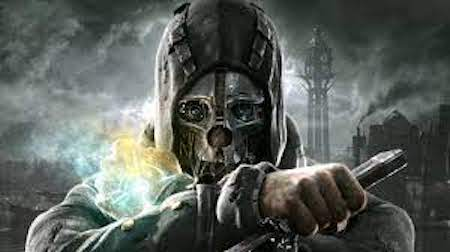

Dishonored
Info
Set in the plague-ravaged city of Dunwall, Dishonored follows the story of Corvo Attano, the last bodyguard to Empress Jessamine Kaldwin. Framed for her murder and the abduction of her daughter, Emily, Corvo is falsely imprisoned by the Empress' Royal Spymaster and usurper, Hiram Burrows.
Six months later, on the eve of his execution, Corvo escapes confinement with the help of a shadowy group of loyalists who seek to eliminate those involved in the assassination of the Empress and restore Emily to the throne. He is further assisted by an enigmatic god called the Outsider, who grants him Supernatural Abilities for reasons equally mysterious. Corvo takes on the role of a feared and infamous assassin as he pursues members of the coup one by one - but whether he is out for justice or revenge is another question. Dishonored features multiple endings, which are dependent on Corvo's actions and player choice throughout the course of the game.
Gameplay
During the time of playing Dishonored, you gain some unique abilities from a stranger called The Outsider. These powers transform the game in a completely new way. You can teleport from roof to roof, freeze time, see through walls, run and jump faster, or even take control of a rat and go through the sewers, the possibilities of completing levels hundreds of ways. The stealth is the main part, you must stay hidden and that’s where the game is great at. The combat of fighting enemies one on one is there but it is never needed. The game is about being sneaky and not being seen and with the powers that is accomplishable, even without killing anybody in the whole game.
Personal Opinion

If you like to be sneaky this is the perfect game for you. Dishonored is a game that makes you feel powerful and stealthy. It is my personal favorite game because of everything that is in the story and the way that you can play and even complete the game Mutiple ways. The special powers that I mentioned earlier makes you play levels your own way. You can teleport everywhere and not be seen. Go in head first and destroy anyone or anything that gets in your way. Each level is design to have different ways to go through. You can climb on the rooftops, turn off machines, or even become a rat and go through the sewers. Doing this makes the levels distinct and pop out from the others. What this game does great is the multiple actions and ending you can get. For example, the more people you kill you will get the bad ending with everything ending in chaos or you can spare people and find the good way and ending in no chaos. This decision to have this makes the game re-playable and the players look at levels differently with each playthrough. Dishonored is a new taste of stealth gameplay and just all around a great story and gameplay.
Dishonored Trailer
Reviews and Purchase Info
Metacritic- 91/100
IGN- 9.2/10
Deestructoid- 9/10
Dishonored can be bought on steam for $9.99 and can be on the Xbox Game pass for $8.99 a month